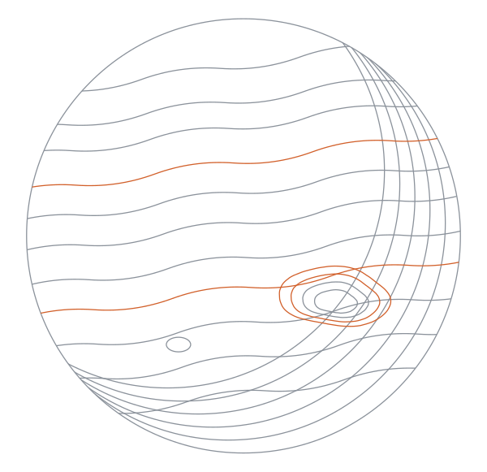
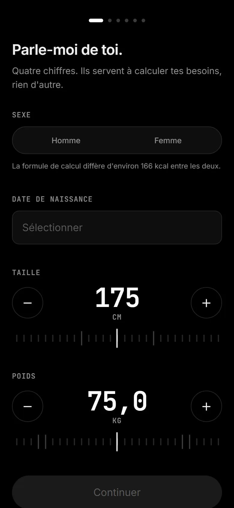

Work2026
SubForge
A nutrition coach prototype: describe a meal in one sentence, the AI suggests the macros, you confirm.
- Setting
- Personal project, prototype
- Where
- Mobile app
- Period
- August 2026
- Team
- Solo
- My role
- Product, design, development
Private code. Screenshots of the app as it runs.


In short
- The problem
- Logging meals takes too long, so you give up after a week.
- My part
- All of it, solo: a mobile prototype where you describe a meal in one sentence and the AI suggests the macros.
- The result
- A prototype running on Android, and real first-hand experience of Supabase and an LLM.
Context
I was getting back into weight training to bulk up, and I already knew where I would give up: food. Every time I had tried to track my meals, I quit after a week because logging was too slow.
The problem
Logging a meal had to take less time than eating it.
And I wanted to try Supabase and LLM integration on a real use case, not a tutorial.
What I built



One sentence, the macros
You describe your meal by voice or text. The AI suggests the foods and macros, you fix them if needed, and nothing is saved until you confirm.
Five questions to start
Goal, body, activity: onboarding takes five questions.
What is non-negotiable
Halal, vegetarian, allergies: constraints you set once, kept apart from simple preferences.
History
Meals for the day and the week.
Technical decisions
- The simplest back end
- Supabase and its Edge Functions, to test the idea fast and see how the two fit together.
- Gemini 2.5 Flash
- Chosen because its API was free at the time. Calls go through an Edge Function so the key stays on the server.
- The AI suggests, the person decides
- The model only suggests. The person confirms what gets saved.
Phone
- React Native + Expo
- Voice or text
- Confirmed by the person
Edge Functions
- Supabase
- Model call
AI
- Gemini 2.5 Flash
- Suggests the macros
Data
- Supabase Postgres
- Auth
The result
A working prototype: APK and AAB builds with EAS, Jest tests, monitoring with Sentry and PostHog. I built it to learn, and I test it on my own meals.
What I took away
A side project is how I learn a stack: I pick the tool that lets me test the idea fast and cheaply.
Stack
- React Native
- Expo
- TypeScript
- Supabase
- Edge Functions
- Gemini 2.5 Flash
- Jest
- Sentry
- PostHog
- EAS